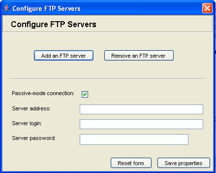

|
|||||||||||||||
|


Using the API from a Java programAntForm can be used from outside of Ant. Indeed, the Java platform itself is lacking for simple out-of-box functionality for making simple forms, hence the use of AntForm to fill the void. The Antform API provides a stunningly simple way of building GUI forms for requesting input from a user. To build an AntForm programmatically, first import the required packages into your java class: import com.sardak.antform.gui.*; import com.sardak.antform.interfaces.*; import com.sardak.antform.types.*; The next step is to build a Control control = new Control(new CallbackTest(), "Configure FTP Servers", null); ControlPanel panel = control.getPanel(); From then on it's just a question of adding widgets for each property that needs to be set, or links for calling back methods on the callback object. Use the callback object through links if you need to change the form between stages of it's use. For instance, for dynamically adding elements to the form, re-construct the form with added elements following the callback.
To every widget that's added to the form, a handle can be retrieved, which will enable getting the widget value after the form has been disposed. This is not the only way, of course, as the form has a
If initial values need to be injected into the form, this can be accomplished via the
Finally, the button controls for approving or resetting the form are added in and the
Once the control is disposed, the properties can be extracted all at once through the panel.getProperties().list(System.out); System.out.println(g1.getValue()); System.exit(0); Here is a screenshot of the ftp example form constructed with the above code:  |